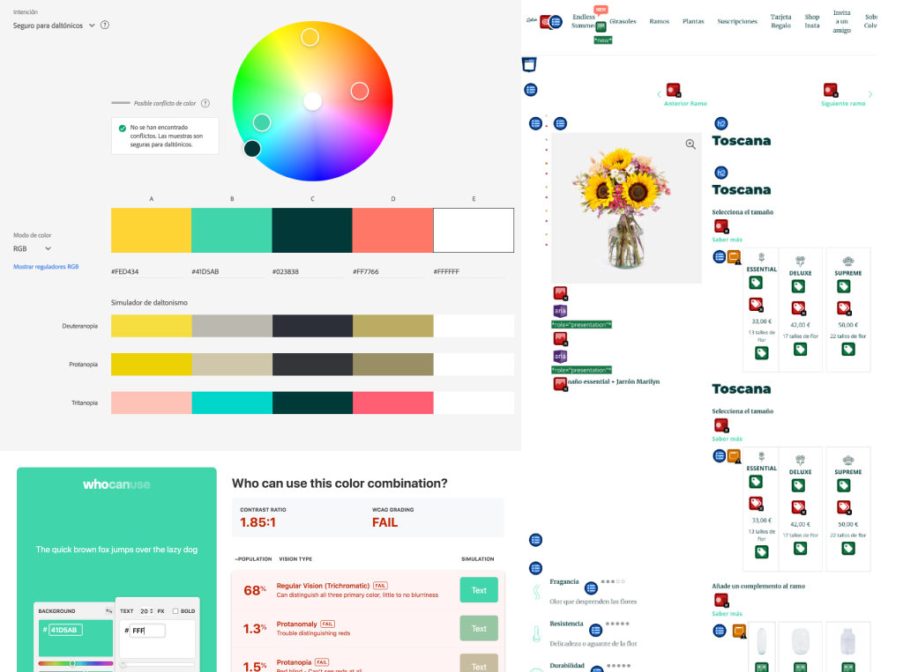
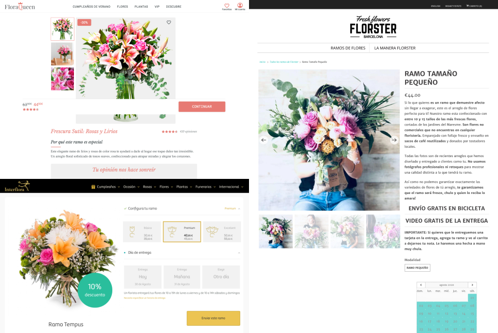
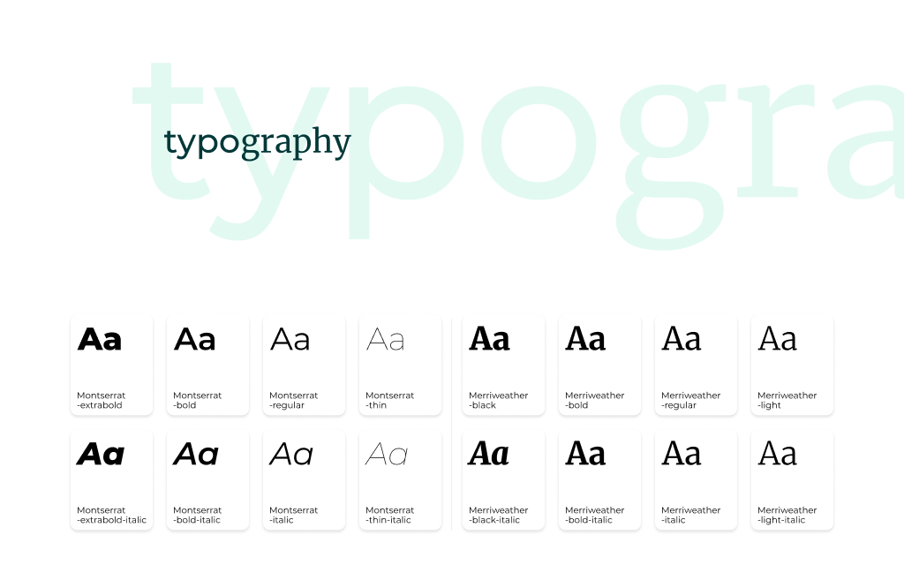
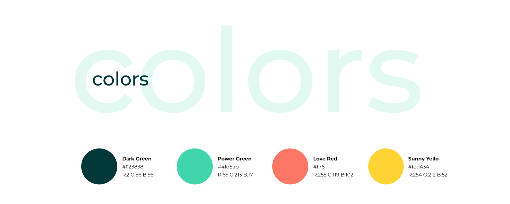
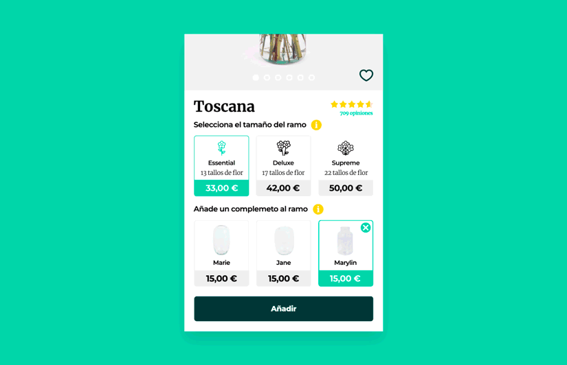
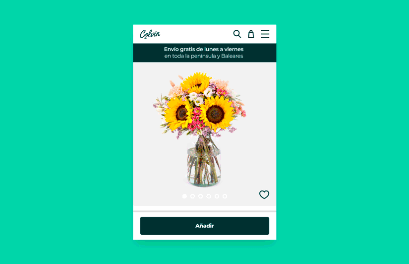

Process
Meeting Laura
First of all, I wanted to meet their user persona, Laura. Whether she was a new user or a returning one, I wanted to understand her possible gains and pains when browsing Colvin, and find out what I could improve to give her a better experience. Understanding her motivations, frustrations and decision triggers was the starting point for every design decision that followed.
Analysing the product
I analysed the existing product page, both on app and web, to check accessibility and detect errors to solve or opportunities to improve. This audit helped identify concrete friction points: inconsistent visual hierarchy, unclear calls to action, missing trust signals, and elements that were competing for attention instead of guiding the user toward the purchase.

Studying the competition
I studied what competitors were doing, identifying features I could adapt and patterns I wanted to deliberately avoid. The goal was not to copy, but to understand the established conventions in the category and find the spaces where Colvin could differentiate itself with a cleaner, more conversion-focused experience.

Building the Design System
I also analysed their existing styleguide to create my own library: fonts, styles, colours, measures, icons and components. The lack of visual consistency between Colvin's web and app was one of the clearest findings of the audit. The design system was built to fix that, giving both platforms a shared visual language that would create the sense of coherence that was missing.

Reaching the goal
With a clear understanding of Laura, the audit findings and the design system in place, I redesigned the mobile web product page. The focus was on removing friction and making every element work toward the conversion goal.
Header section
Redistributed menu items and added a visible shopping cart icon and search access, reducing the number of steps to reach any part of the experience.
Product section
Redesigned and added key elements: a shipping progress bar, a heart icon for saving favourites, product ratings (a highly determinant factor for purchase decisions), easier access to additional information, default selections to reduce decision fatigue, a selector test proposal (a candidate for A/B testing), improved cart button behaviour, updated icons and property data, a softer and more coherent colour palette, and better-displayed product details.
The rest of the page
If Laura made it past the product section, it was because she wanted to explore more. Related bouquets are now displayed in two columns with a category banner. The subscription banner, Instagram section and help area were restructured, the app download is highlighted, and the footer layout was reorganised for clarity.

Micro-interactions
Two animated samples were prepared to demonstrate key interaction behaviours on the product page, bringing the static redesign to life and validating the experience before any development handoff.
Bouquet size selector

"Add to cart" button behaviour

Measurement and iteration
All that said, the only way to know if the proposal worked better than the previous design was through tests and metrics. The redesign should increase the conversion rate to checkout as the primary goal. Beyond that: how does it perform for Laura? Is it more efficient? Are there flows that still need improvement, both on the product page and at checkout? Metrics, metrics, metrics. And also the option to test the prototype with real users and gather feedback before any development or release.
Learnings
This project confirmed that consistency is the foundation of user trust. A design system is not just a component library: it is a brand's visual promise translated into design language. Without it, every screen tells a slightly different story, and that inconsistency creates friction before a user even reads a single word.
Qualitative research, even with a single persona, can be tremendously revealing. Getting close to Laura's real frustrations completely changed the priority order of elements in the redesign. Numbers tell you what is happening; people tell you why.